Off the clock
The other half.
Not everything is Hamiltonians and train/test splits. This page is the part of my life that happens away from the screen, and it will keep growing.
Jacky and the squad
I love dogs, and animals in general. The squad: Jacky, Jobe and Chica.
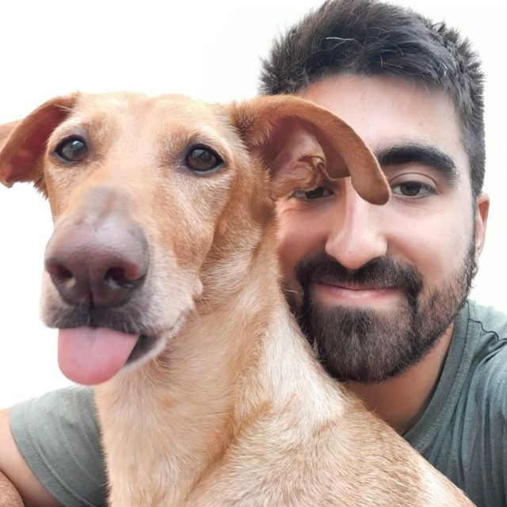
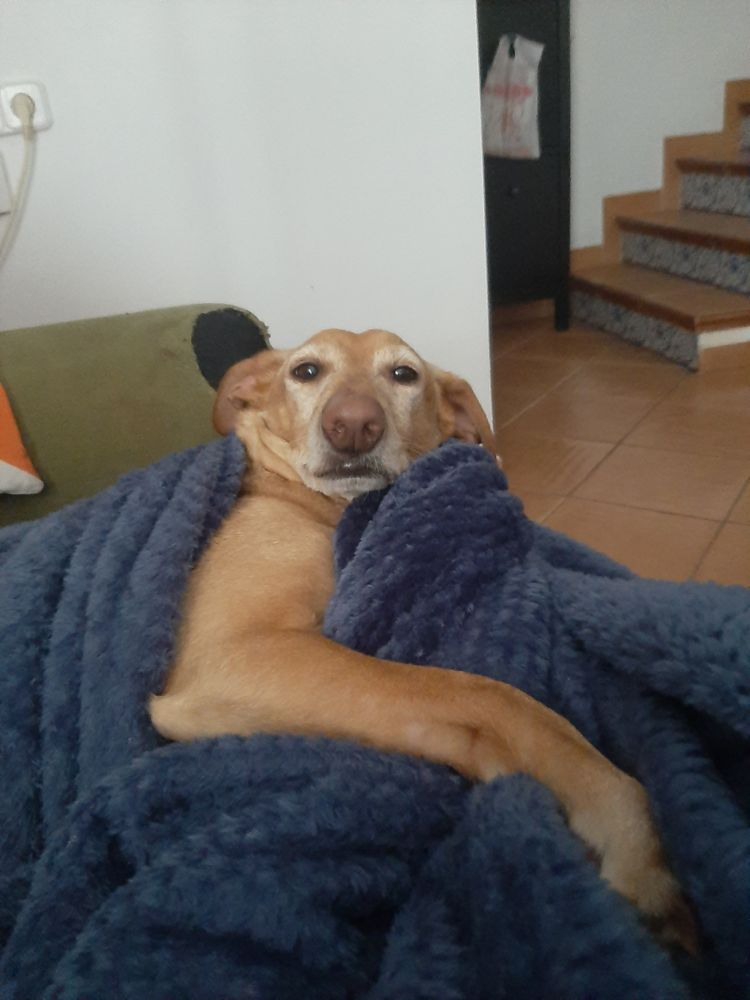
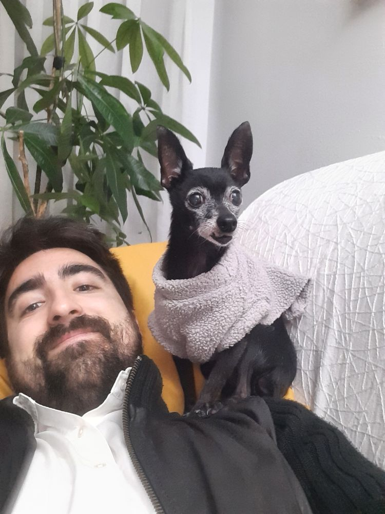
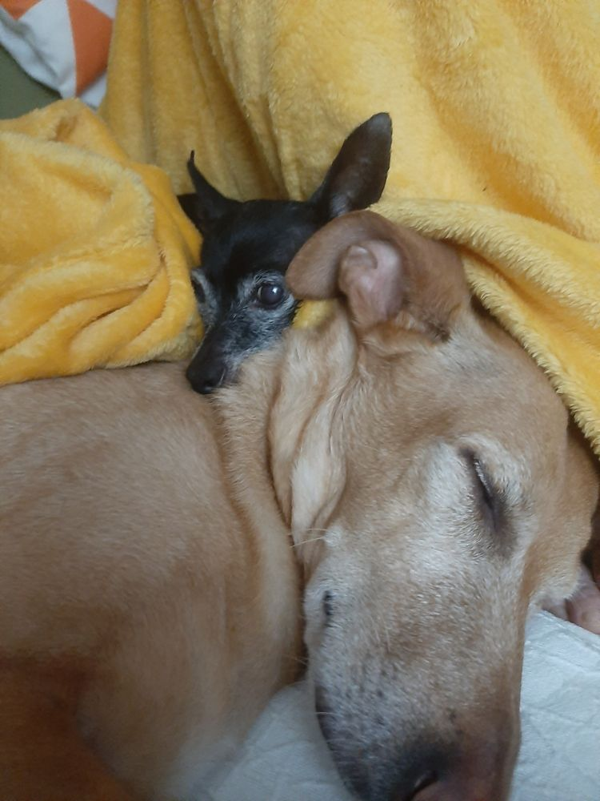
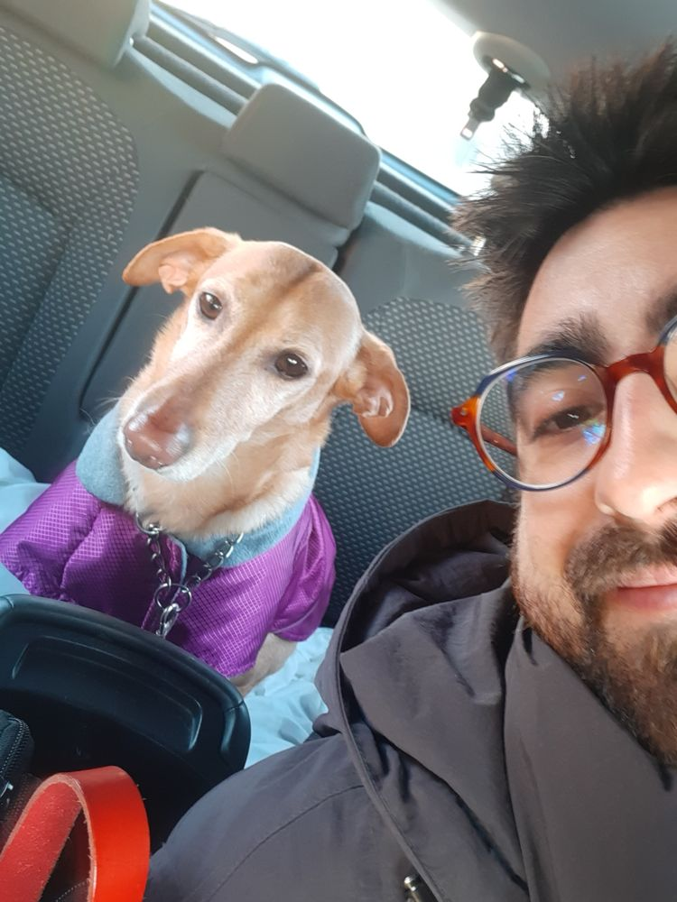
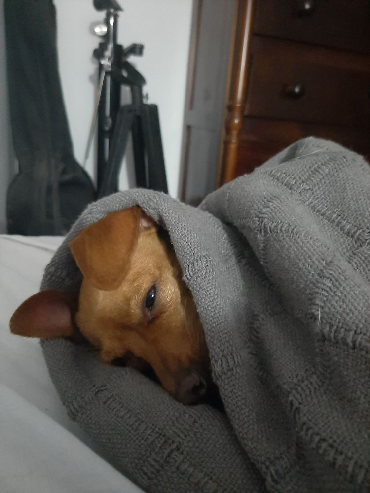
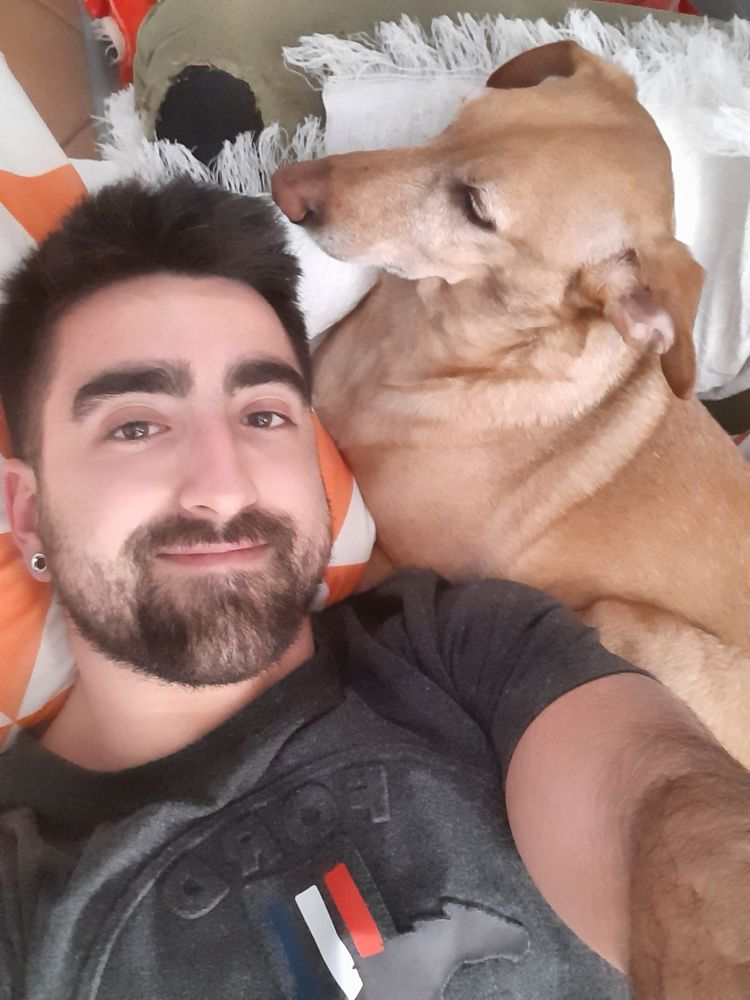
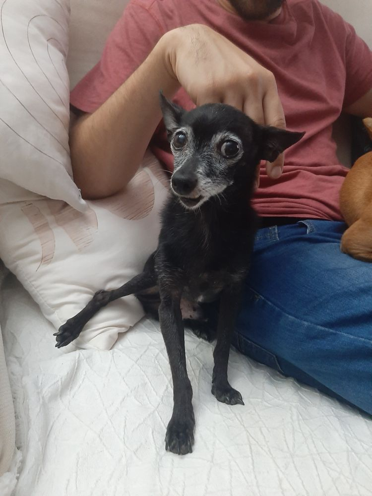
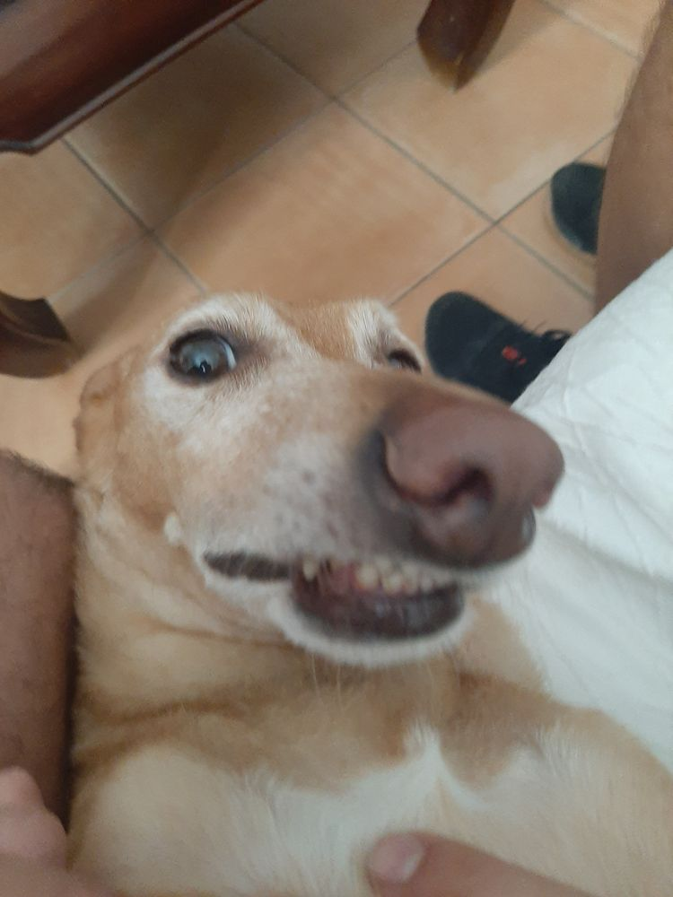
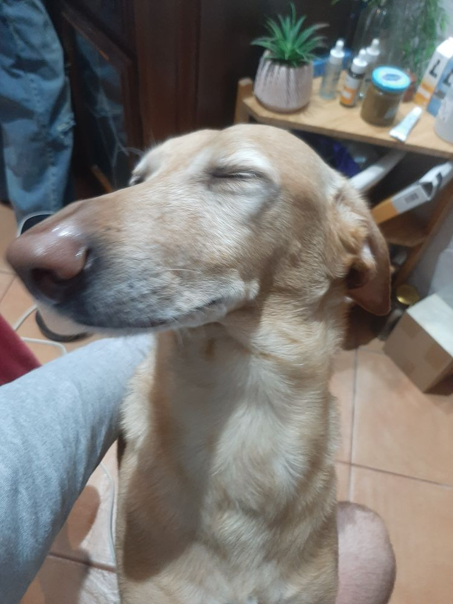
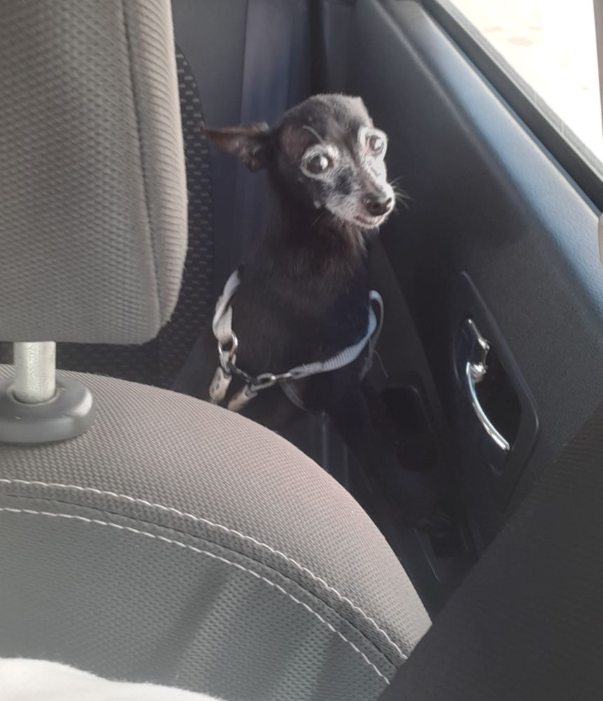
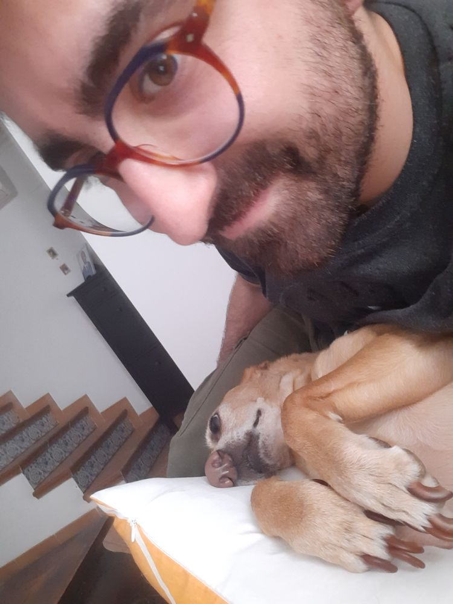
CrossFit
I train CrossFit. Some moments from the box:
Volunteering
- El Buen Amigo animal shelter. Weekly care for rescued dogs, plus adoption advertisements and awareness campaigns.
- Colectivo LGTB+ Pedro Zerolo, Faculty of Mathematics, University of Seville (2017 – 2019). Awareness campaigns and outreach activities.
Also
- Origami. I used to fold tessellations. I don't fold much these days, but I still love it.
- Reading and writing.
- Languages. Spanish is my native language, my English is C1, and French is a work in progress.